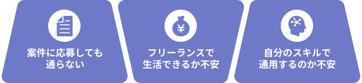

WithCode・WithPro生限定
案件紹介プラットフォーム
フリーランスとして
活躍するために
必要な環境が、全てここに。
案件紹介・仕事マッチング・キャリアサポートまで。
WithFreeは、フリーランスとして活躍するための環境を提供します。
こんな方にご利用いただいております



FOR ALL FREELANCERS
フリーランスとして
活躍したいすべての方へ。
Web制作・デザイン・マーケティングなど
フリーランス向けのWeb案件を
幅広くご紹介しています。
- # ホームページ制作
- # ランディングページ制作
- # WordPress制作
- # NoCode制作
- # Webデザイン
- # バナー制作
- # ロゴデザイン
- # サムネイル制作
- # フロントエンド開発
- # バックエンド開発
- # アプリ開発
- # SEO対策
- # Web広告運用
- # SNS運用
- # ライティング
- # 動画編集
- # AI活用
- # マーケティング
FEATURES OF WITHFREE
ウィズフリでできること
案件の受発注からプロジェクトの進捗管理まで。
ウィズフリは、フリーランスとして働く環境を提供します。
案件を通じて収入を得る
仕事の受注
優秀な仲間に依頼できる
仕事の発注
安心して進められる
ディレクションサポート
仕事の受注
募集中の案件に応募し、仕事を受注することができます。
自分のスキルに合った案件を見つけ、実績を積みながら仕事の機会を広げられます。
- 案件検索
- 案件応募
- 仕事の受注
- マッチング
- スキル登録
- 実績管理
- etc...
仕事の発注
優秀な卒業生へ仕事を発注し、プロジェクトをスムーズに進めることができます。信頼できるクリエイターに業務を依頼できる環境を提供します。
- クリエイター検索
- 人材マッチング
- プロジェクト発注
- 継続パートナー探し
- 業務依頼の管理
- etc...
ディレクションサポート
ディレクターがプロジェクトの進行をサポートし、仕事をスムーズに進めることができます。フィードバックや添削サポートを通して、安心してプロジェクトに取り組める環境を提供します。
- プロジェクト管理
- 進捗管理
- タスク管理
- ディレクターFB
- 添削サポート
- チャット相談
- スケジュール管理
- etc...
WHY CHOOSE WITHFREE
ウィズフリが選ばれる理由
- #受注側
- #発注側
理由
1
卒業生限定だから継続的な案件獲得も可能
ウィズフリでは、案件紹介の対象を卒業生に限定しています。 そのため競争が過度に激しくならず、スキルや経験に応じた案件を継続的に受注できる環境を提供しています。
学んだスキルを活かせる
Web制作やデザイン、マーケティングなど、スキルを活かせるさまざまな案件に応募できます。自分の得意分野に合った仕事を見つけることが可能です。
実務経験を積める環境
案件を通して実務経験を積みながら、フリーランスとしての実績を増やすことができます。経験を重ねることで、より多くの案件獲得につながります。
継続案件につながる
一度の案件だけでなく、継続的な案件やパートナーシップにつながる可能性があります。長期的に仕事を獲得できる環境を提供しています。
理由
2
現役ディレクターによる伴走サポート
経験豊富な現役フリーランスがディレクターとして案件をサポートします。
進行管理やフィードバックを受けながら、安心して仕事に取り組むことができます。
案件の進行をサポート
現役ディレクターが案件の進行をサポートします。タスク整理や進行管理を行いながら、スムーズにプロジェクトを進めることができます。
フィードバック・添削サポート
制作物に対するフィードバックや添削を受けることができます。実務に近い環境で学びながら、スキルを磨くことが可能です。
安心して取り組める環境
困ったときにはディレクターへ相談することができます。伴走サポートがあることで、安心して案件に取り組むことができます。
理由
3
フルリモートで完結する案件
場所に縛られず、オンライン上で完結する案件に取り組むことができます。
自宅や好きな場所から、フリーランスとして仕事を進めることが可能です。
場所を選ばず働ける
すべてオンラインで進行する案件のため、 場所に縛られず仕事に取り組むことができます。自宅や好きな場所からフリーランスとして働くことが可能です。
プロジェクト単位で完結
案件はプロジェクト単位で進行するため、 業務内容や期間が明確な状態で仕事に取り組めます。安心して案件を進められる環境を提供しています。
柔軟な働き方が可能
スケジュールを調整しながら、 自分のライフスタイルに合わせて仕事を進めることができます。フリーランスとして自由な働き方を実現できます。
フリーランスの仕事と機会を ウィズフリでつなぐ。
案件のやり取りや進行管理、コミュニケーションが
複数のツールやプラットフォームに分散してしまうことは少なくありません。 仕事の管理が煩雑になり、案件対応に余計な手間がかかってしまうこともあります。
フリーランスの仕事に必要な機能をひとつの環境にまとめることができます。
仕事のやり取りやプロジェクト管理を 一元化することで、
スムーズに案件を進められる環境を提供します。
安心してプロジェクトに取り組むことが可能です。
仕事の管理をシンプルにすることで、フリーランスとして より多くの案件に集中できる環境を実現します。
フリーランスとしての一歩を、ここから。
案件の受注・仕事の発注・ディレクションサポートまで。
ウィズフリがフリーランス活動をサポートします。
CASE STUDIES
制作事例
- ランディングページ
- #ホームページ
- #WordPress
- #STUDIO
- #Wix
株式会社Losta 様
- #ホームページ
- #WordPress
担当者
A.Mさん
#WithCode
#フリーランスコース
#16週間
詳しく見る »
WithCode・WithPro生限定
PRICING PLAN
料金プラン
HOW TO USE
ご利用の流れ
STEP1
会員登録
まずはウィズフリに会員登録します。アカウントを作成し、プロフィールやスキル情報を登録します。
STEP2
テストの受験
WithCode生は、卒業テストや昇格テストにて、WithPro生は月次テストにてスキルを評価します。一定の基準を満たしたクリエイターが案件に参加できます。
STEP3
案件を探す
掲載されている案件の中から、自分のスキルや経験に合った案件を探します。
STEP4
案件に応募
興味のある案件に応募し、クライアントやディレクターとやり取りを行います。
STEP5
プロジェクト開始
案件が決定するとプロジェクトがスタートします。ディレクターのサポートを受けながら案件を進めることができます。
STEP6
納品・案件完了
制作物を納品し案件が完了します。 継続案件や新しいプロジェクトにつながる可能性もあります。
Works 事例紹介

News お知らせ
Career 採用情報
テキストが入ります。テキストが入ります。テキストが入ります。テキストが入ります。
テキストが入ります。テキストが入ります。テキストが入ります。テキストが入ります。


Contact お問い合わせ
お気軽にご連絡ください。
Blog ブログ
開発現場の声をお届けします。
We provide digital design for your value.
We provide digital design for your value.